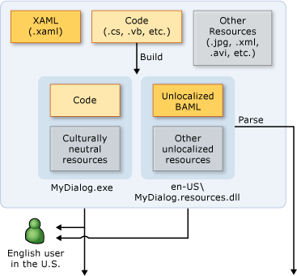
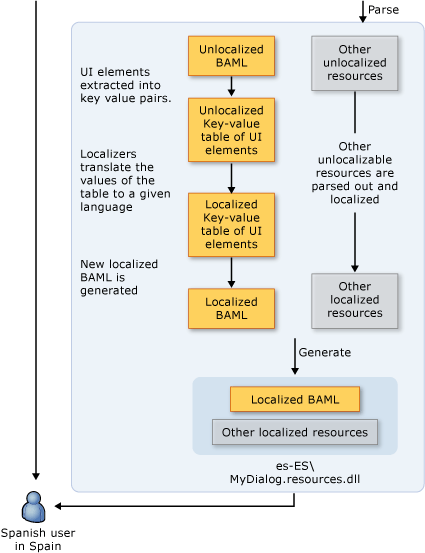
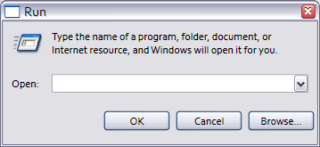
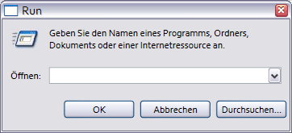
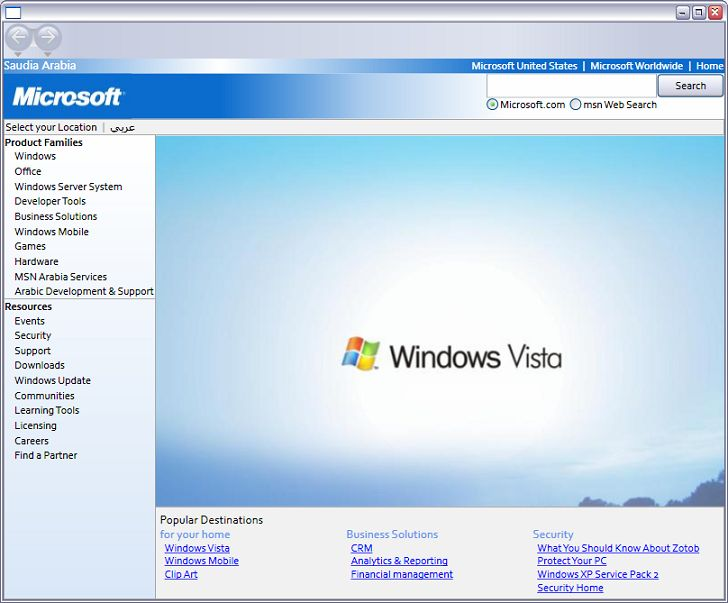
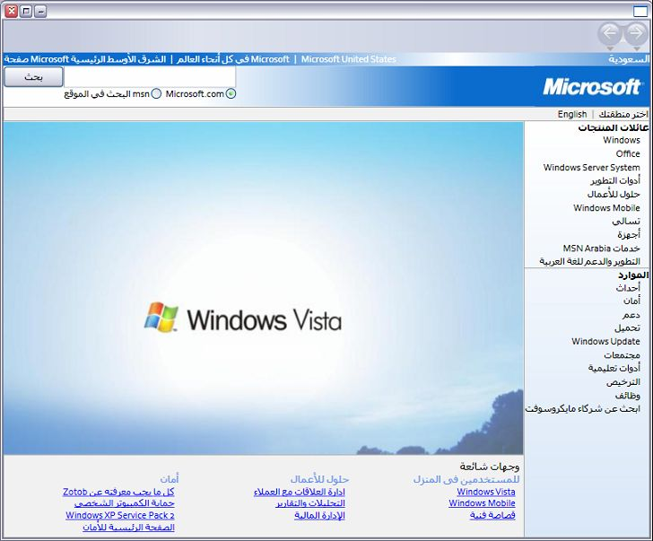
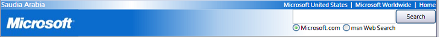
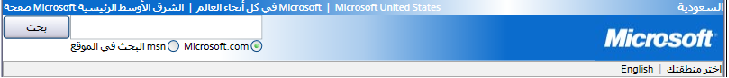

Общие сведения о глобализации и локализации WPF
Если доступность продукта ограничена только одним языком, то таким образом ограничивается потенциальная база клиентов до некоторой части всего 6,5-миллиардного мирового населения. Чтобы созданные приложения были доступны мировой аудитории, одним из лучших и наиболее экономичных способов охватить большее количество клиентов является экономически эффективная локализация продукта.
В этом обзоре представлена глобализации и локализации в Windows Presentation Foundation (WPF). Глобализация — это проектирование и разработка приложений, которые выполняются в нескольких расположениях. Например, глобализация поддерживает локализованные пользовательские интерфейсы и региональные данные для пользователей на различных языках. WPF предоставляет глобализованные функциональные возможности проектирования, включая автоматический макет, вспомогательные сборки и локализованные атрибуты и комментарии.
Локализация — это перевод ресурсов приложения в локализованные версии для конкретных языков и региональных параметров, которые поддерживает приложение. При локализации в WPF, используйте API-интерфейсы в System.Windows.Markup.Localizer пространства имен. Эти API-интерфейсов power средства LocBaml средство командной строки. Сведения о том, как создавать и использовать LocBaml, см. в разделе локализация приложения.
Рекомендации по глобализации и локализации в WPF
Вы можете максимально эффективно использовать функциональные возможности глобализации и локализации, встроенных в WPF , выполнив Дизайн пользовательского интерфейса, а также советы, относящиеся к локализации, которые в этом разделе содержатся.
Оптимальные методы разработки пользовательского интерфейса WPF
При проектировании WPF— на основе UI, рассмотрите возможность реализации этих рекомендаций:
Запись вашего UI в XAML; Избегайте создания UI в коде. При создании вашей UI с помощью XAML, он предоставляется через встроенные интерфейсы API локализации.
Избегайте использования абсолютных положений и фиксированных размеров для размещения содержимого; Вместо этого используйте относительное или автоматическое изменение размеров.
Используйте SizeToContent ширины и высоты значение
Auto.Избегайте использования Canvas для размещения UIs.
Используйте Grid и функции общего размера.
Необходимо предусмотреть дополнительное пространство в полях, так как локализованный текст часто занимает больше места. Дополнительное пространство позволит использовать выступающие символы, возможно, присутствующие в конкретном языке.
Включить TextWrapping на TextBlock во избежание обрезки.
Задайте атрибут
xml:lang. Этот атрибут описывает язык и региональные параметры конкретного элемента и его дочерних элементов. Значение этого свойства изменяет поведение некоторых функциональных возможностей WPF. Например, изменяется процесс переноса по слогам, проверки орфографии, подстановки чисел, формирования сложных скриптов и подмены шрифта. См. в разделе Глобализация для WPF Дополнительные сведения о параметре XML: lang в XAML обработки.Создание настраиваемого составного шрифта, чтобы получить лучшее управление шрифтами, которые используются для различных языков. По умолчанию WPF использует шрифт globaluserinterface.Composite из папки в папке Windows\Fonts.
При создании приложений навигации, которые могут быть локализованы в языке, использующем представление текста в формате справа налево, необходимо явно установить FlowDirection части каждой страницы, чтобы обеспечить страницы не наследует FlowDirection из NavigationWindow.
При создании автономных приложений навигации, размещенных вне браузера, задайте StartupUri для начального приложения NavigationWindow вместо на страницу (например,
<Application StartupUri="NavigationWindow.xaml">). Такой подход позволяет изменять FlowDirection окна и панели навигации. Дополнительные сведения и пример см. в разделе пример Globalization Homepage.
Оптимальные методы локализации приложений WPF
При локализации WPF— приложений, рассмотрите возможность реализации этих рекомендаций:
Используйте комментарии локализации для обеспечения дополнительного контекста для локализаторов.
Используйте атрибуты локализации для управления локализацией вместо выборочного пропуска Uid свойства элементов. См. в разделе атрибуты и комментарии локализации Дополнительные сведения.
Используйте
msbuild -t:updateuidи-t:checkuidдля добавления и проверки Uid свойств в вашей XAML. Используйте Uid свойства для отслеживания изменений между разработкой и локализацией. Uid свойства помогают локализовать новые изменения в разработке. Если вручную добавить Uid свойства UI, задача является трудоемкой и менее точным.Не следует редактировать или изменять Uid свойства после начала локализации.
Не используйте дубликат Uid свойства (помните этот совет при использовании команды копирования и вставки).
Задайте
UltimateResourceFallbackрасположение в AssemblyInfo.*, чтобы указать соответствующий язык для резервной проверки подлинности (например,[assembly: NeutralResourcesLanguage("en-US", UltimateResourceFallbackLocation.Satellite)]).Если вы решили включить исходный язык в основную сборку путем пропуска
<UICulture>тег в файле проекта, задайтеUltimateResourceFallbackрасположении, что и основной сборки вместо вспомогательной (например,[assembly: NeutralResourcesLanguage("en-US", UltimateResourceFallbackLocation.MainAssembly)]).
Локализация приложения WPF
При локализации WPF приложения можно несколькими способами. Например, можно привязать локализованные ресурсы в приложении XML файл, хранить локализуемый текст в resx-таблицах или же указать локализатору использовать XAML файлов. В этом разделе рассматривается рабочий процесс локализации, использующий BAML-формы XAML, который предоставляет несколько преимуществ:
Вы можете локализовать после построения.
Можно обновить до более новой версии BAML-формы XAML с локализациями из более старой версии BAML-формы XAML таким образом, вы можете локализовать, в то же время, которое разрабатывается.
Можно проверить исходные исходные элементы и семантику во время компиляции, так как форма BAML кода XAML является скомпилированной формой XAML.
Процесс построения локализации
При разработке WPF приложения, процесс построения локализации выглядит следующим образом:
Разработчик создает и глобализует WPF приложения. В файле проекта разработчик задает
<UICulture>en-US</UICulture>таким образом, чтобы при компиляции приложения, не зависящий от языка основная сборка. Эта сборка имеет вспомогательный файл .resources.dll, содержащий все локализуемые ресурсы. При необходимости можно хранить исходный язык в основную сборку, так как наша локализация API - интерфейсы поддерживают извлечение из основной сборки.Когда файл компилируется в сборку, XAML преобразуется в BAML-форму XAML. Независимый от языка
MyDialog.exeи языку и региональным параметрам зависимые (на английском языке)MyDialog.resources.dllфайлы выпущены для англоговорящего клиента.
Рабочий процесс локализации
Процесс локализации начинается после сборки нелокализованного MyDialog.resources.dll файла. UI Элементы и свойства в исходном XAML извлекаются из BAML-формы XAML в пары "ключ значение" с помощью API - интерфейсы под System.Windows.Markup.Localizer. Локализаторы используют пары "ключ —значение" для локализации приложения. После завершения локализации можно создать файл .resource.dll на основе новых значений.
Ключи пар "ключ значение" x:Uid значения, которые помещаются разработчиком в исходный XAML. Эти x:Uid включить значения API для отслеживания и объединения изменений, разработчик и локализатором во время локализации. Например, если разработчик изменяет UI после начала локализации, можно слить изменения с уже выполненной работой по локализации, так что теряется минимум работы по переводу.
На приведенном ниже рисунке показан типичный рабочий процесс локализации на основе BAML-формы XAML. Эта диаграмма предполагает, что разработчик создает приложение на английском языке. Разработчик создает и глобализует приложение WPF. В файле проекта разработчик задает <UICulture>en-US</UICulture> , чтобы на сборки, от основного языка сборка получает созданный вспомогательной. resources.dll, содержащий все локализуемые ресурсы. Кроме того, можно сохранить исходный язык в основной сборке, так как интерфейсы API локализации WPF поддерживают извлечение из основной сборки. По завершении процесса сборки XAML компилируется в BAML. Независимый от языка и региональных параметров файл MyDialog.exe.resources.dll поставляется англоязычному пользователю.


Примеры локализации WPF
Этот раздел содержит примеры локализованных приложений, которые помогут понять, как сборки и локализации WPF приложений.
Пример диалогового окна "Выполнить"
На следующем рисунке показаны выходные данные запуска пример диалогового окна.
Английский.

Немецкий.

Разработка глобального диалогового окна "Выполнить"
Этот пример выводит запуска диалоговое окно с помощью WPF и XAML. Это диалоговое окно эквивалентно запуска диалоговое окно, которое доступно из Microsoft Windows меню "Пуск".
Некоторые замечания по созданию глобальных диалоговых окон
Автоматический макет
В файле Window1.xaml
<Window SizeToContent="WidthAndHeight">
Предыдущее свойство Window автоматически изменяет размер окна в соответствии с размером содержимого. Это свойство предотвращает обрезание содержимого окна, которое увеличивается в размере после локализации. Кроме того, оно также удаляет лишнее пространство, если содержимое уменьшается в размерах после локализации.
<Grid x:Uid="Grid_1">
Uid для того, требуются свойства WPF локализации API - интерфейсы для правильной работы.
Они используются WPF локализации API - интерфейсы для отслеживания изменений между разработкой и локализацией пользовательский интерфейс. Uid свойства позволяют выполнить слияние более новой версии UI со старой локализацией UI. Добавляемые Uid свойства, выполнив msbuild -t:updateuid RunDialog.csproj в командной строке. Это рекомендуемый способ добавления Uid свойства тем, что добавление их вручную обычно требует много времени и менее точным. Можно убедиться, что Uid правильно заданы свойства, выполнив msbuild -t:checkuid RunDialog.csproj.
UI Структурирован с помощью Grid управления, который является полезным управления преимуществами автоматического макета в WPF. Обратите внимание, что диалоговое окно разделено на три строки и пять столбцов. Не в одном из определений строк и столбцов имеет фиксированный размер; Таким образом UI элементы, которые располагаются в каждой ячейке могут адаптироваться к увеличению и уменьшению размеров во время локализации.
<Grid.ColumnDefinitions>
<ColumnDefinition x:Uid="ColumnDefinition_1" />
<ColumnDefinition x:Uid="ColumnDefinition_2" />
Первые два столбца где откройте: метки и ComboBox помещаются использует 10 процентов UI всей ширины.
<ColumnDefinition x:Uid="ColumnDefinition_3" SharedSizeGroup="Buttons" />
<ColumnDefinition x:Uid="ColumnDefinition_4" SharedSizeGroup="Buttons" />
<ColumnDefinition x:Uid="ColumnDefinition_5" SharedSizeGroup="Buttons" />
</Grid.ColumnDefinitions>
Обратите внимание, что в примере используется функция общего изменения размера Grid. Последние три столбца используют это преимущество, размещаясь в том же SharedSizeGroup. Как следует из имени свойства, это позволяет столбцам использовать один и тот же размер. Поэтому при «Обзор...» получает локализации в более длинную строку «Durchsuchen …», всех кнопок увеличивается ширина маленькую кнопку «ОК» и непропорционально большой кнопкой «Durchsuchen …».
xml:lang
xml:lang="en-US"
Обратите внимание, что XML: lang в XAML обработки размещается в корневом элементе UI. Это свойство описывает язык и региональные параметры конкретного элемента и его потомков. Это значение используется несколькими функциональными возможностями в WPF и должно быть соответствующим образом изменено во время локализации. Это значение изменяется в зависимости от того, какой языковой словарь используется для расстановки переносов и проверки орфографии слов. Оно также влияет на отображение цифр и на то, как система подмены шрифтов выбирает шрифт для использования. Наконец, это свойство влияет на способ отображения чисел и на способ написания текста в сложных скриптах. По умолчанию используется значение en-US.
Создание вспомогательной сборки ресурсов
В файле .csproj
Изменить .csproj и добавьте следующий тег безусловной операции <PropertyGroup>:
<UICulture>en-US</UICulture>
Обратите внимание на добавленную UICulture значение. Если присвоено значение на допустимый CultureInfo значение, например en US, построение проекта будет создана вспомогательная сборка со всеми локализуемыми ресурсами в нем.
<Resource Include="RunIcon.JPG">
<Localizable>False</Localizable>
</Resource>
RunIcon.JPG Необходимо локализовать, потому что он должен быть одинаков для всех языков и региональных параметров. Localizable имеет значение false так что он остается в независимой от языка основной сборке, вместо вспомогательной сборки. Значение по умолчанию для всех некомпилируемых ресурсов — Localizable присвоено true.
Локализация диалогового окна "Выполнить"
Анализ
После сборки приложения первым шагом в локализации является анализ локализуемых ресурсов из вспомогательной сборки. В целях этого раздела используется демонстрационное средство LocBaml, которую можно найти в средства LocBaml. Обратите внимание, что LocBaml ― только демонстрационное средство, предназначенное помочь начать работу по созданию средства локализации, встраиваемого в процесс локализации. С помощью LocBaml выполните следующую команду, чтобы проанализировать: LocBaml/parse RunDialog.resources.dll/out: создать файл «Команду».
Локализация
Для редактирования этого файла можно воспользоваться любым редактором CSV, поддерживающим Юникод. Исключите все записи с категорией локализации "Нет". Должны остаться следующие записи.
| Ключ ресурса | Категория локализации | Значение |
|---|---|---|
| Button_1:System.Windows.Controls.Button.$Content | Кнопка | ОК |
| Button_2:System.Windows.Controls.Button.$Content | Кнопка | Отмена |
| Button_3:System.Windows.Controls.Button.$Content | Кнопка | Обзор... |
| ComboBox_1:System.Windows.Controls.ComboBox.$Content | ComboBox | |
| TextBlock_1:System.Windows.Controls.TextBlock.$Content | Текста | Введите имя программы, папки, документа или ресурса Интернета, и Windows откроет их. |
| TextBlock_2:System.Windows.Controls.TextBlock.$Content | Текста | Открыть: |
| Window_1:System.Windows.Window.Title | Заголовок | Выполнить |
Для локализации приложений в немецком языке потребуются следующие переводы.
| Ключ ресурса | Категория локализации | Значение |
|---|---|---|
| Button_1:System.Windows.Controls.Button.$Content | Кнопка | ОК |
| Button_2:System.Windows.Controls.Button.$Content | Кнопка | Abbrechen |
| Button_3:System.Windows.Controls.Button.$Content | Кнопка | Durchsuchen… |
| ComboBox_1:System.Windows.Controls.ComboBox.$Content | ComboBox | |
| TextBlock_1:System.Windows.Controls.TextBlock.$Content | Text | Geben Sie den Namen eines Programms, Ordners, Dokuments oder einer Internetresource an. |
| TextBlock_2:System.Windows.Controls.TextBlock.$Content | Текста | Öffnen: |
| Window_1:System.Windows.Window.Title | Заголовок | Выполнить |
Создание
Последний шаг локализации включает создание только что локализованной вспомогательной сборки. Эту задачу можно решить с помощью следующей команды LocBaml.
LocBaml.exe /generate RunDialog.resources.dll /trans:RunDialog.resources.dll.CSV /out: . /cul:de-DE
В немецкой Windows, если файл resources.dll размещен в папке de-DE главной сборки, этот ресурс будет автоматически загружаться вместо того, в папке en US. Если у вас используется немецкая версия Windows Чтобы проверить это, установите язык и региональные параметры региональные Windows вы используете (например, en-US) и заменить исходные ресурсы библиотеки DLL.
Загрузка вспомогательных ресурсов
| MyDialog.exe | en-US\MyDialog.resources.dll | de-DE\MyDialog.resources.dll |
|---|---|---|
| Код | Исходный английский BAML | Локализованный BAML |
| Ресурсы, не зависящие от языка и региональных параметров | Другие ресурсы на английском языке | Другие ресурсы, локализованные для немецкого языка |
Платформа .NET framework автоматически выбирает вспомогательную сборку ресурсов для загрузки в зависимости от приложения Thread.CurrentThread.CurrentUICulture. По умолчанию используется язык и региональные параметры вашего Windows операционной системы. Таким образом, если вы используете немецкий Windows, загружается de-DE\MyDialog.resources.dll, если используется английский Windows, загружается en-US\MyDialog.resources.dll. Можно задать для приложения резервный ресурс, указав NeutralResourcesLanguage в AssemblyInfo.* проекта. Например, если будет указано:
[assembly: NeutralResourcesLanguage("en-US", UltimateResourceFallbackLocation.Satellite)]
то в случае недоступности de-DE\MyDialog.resources.dll и de\MyDialog.resources.dll немецкой версией Windows будет использоваться en-US\MyDialog.resources.dll.
Домашняя страница сайта Майкрософт для Саудовской Аравии
На рисунке ниже показаны английская и арабская домашние страницы. Полный пример создания такой графики см. в разделе пример Globalization Homepage.
Английский.

Арабский:

Разработка Microsoft глобальной домашней страницы
Этот макет веб-сайта Майкрософт для Саудовской Аравии показывает функциональные возможности глобализации, предоставляемые для языков с порядком чтения справа налево (RightToLeft). Языки, такие как иврит и арабский имеют порядок чтения справа налево, поэтому макет UI необходимо часто надо компоновать совершенно иначе, нежели было бы на языках слева направо, например в английском языке. Локализация с языка с направлением письма слева направо на язык с направлением письма справа налево или наоборот может быть достаточно сложной. WPF разработан так, чтобы значительно упростить подобные локализации.
FlowDirection
Homepage.xaml:
<Page x:Uid="Page_1" x:Class="MicrosoftSaudiArabiaHomepage.Homepage"
xmlns="http://schemas.microsoft.com/winfx/2006/xaml/presentation"
xmlns:x="http://schemas.microsoft.com/winfx/2006/xaml"
FlowDirection="LeftToRight"
Localization.Comments="FlowDirection(This FlowDirection controls the actual content of the homepage)"
xml:lang="en-US">
Обратите внимание, что FlowDirection свойство Page. Изменение этого свойства для RightToLeft приведет к изменению FlowDirection из Page и ее дочерних элементов, чтобы макет этого UI зеркально отразится справа налево, как и ожидает Арабский пользователь. Поведение наследования можно переопределить, указав явный FlowDirection для любого элемента. FlowDirection Свойство доступно на любом FrameworkElement или документа связанного элемента, и имеет неявное значение LeftToRight.
Обратите внимание, что даже фоновые градиентные кисти соответствующим образом при корневой FlowDirection изменяется:
FlowDirection="LeftToRight"

FlowDirection="RightToLeft"

Избегайте использования фиксированных размеров для панелей и элементов управления
Посмотрите на Homepage.xaml, обратите внимание, что помимо фиксированной ширины и высоты, заданной для всего UI вверху DockPanel, существуют другие фиксированные размеры. Не следует использовать фиксированные размеры, чтобы предотвратить отсечение локализованного текста, который может быть больше, чем исходный текст. Панели и элементы управления WPF будут автоматически изменяться в размерах в зависимости от находящегося в них содержимого. Большинство элементов управления также имеют минимальные и максимальные размеры, которые можно задать для большего контроля (например, MinWidth = «20»). С помощью Grid, также можно задать относительную ширину и высоту с помощью "*" (например, Width="0.25*") или использования функции совместного использования размера ячейки.
Комментарии о локализации
Во многих случаях содержимое может быть неоднозначным и трудным для перевода. Разработчик и проектировщик имеют возможность предоставить локализаторам дополнительный контекст и примечания в комментариях локализации. Например, в приведенных ниже комментариях локализации уточняется использование символа "|".
<TextBlock
x:Uid="TextBlock_2"
DockPanel.Dock="Right"
Foreground="White"
Margin="5,0,5,0"
Localization.Comments="$Content(This character is used as a decorative rule.)">
|
</TextBlock>
Этот комментарий становится связанным с содержимым TextBlock_1 и средство LocBaml (см. в разделе локализация приложения), его можно увидеть в шестом столбце строки TextBlock_1 в выходном CSV-файле:
| Ключ ресурса | Категория | Доступен для чтения | Изменяемый | Комментарий | Значение |
|---|---|---|---|---|---|
| TextBlock_1:System.Windows.Controls.TextBlock.$Content | Текста | true | true | Этот символ используется в качестве декоративного правила. | | |
Комментарии могут быть помещены в содержимое или в свойство любого элемента посредством следующего синтаксиса.
<TextBlock
x:Uid="TextBlock_1"
DockPanel.Dock="Right"
Foreground="White"
Margin="5,0,5,0"
Localization.Comments="$Content(This is a comment on the TextBlock's content.)
Margin(This is a comment on the TextBlock's Margin property.)">
|
</TextBlock>
Атрибуты локализации
Разработчику или менеджеру локализации часто бывает необходимо управлять тем, что локализаторы могут читать и изменять. Например, может быть нежелательно, чтобы локализатор переводил название компании или юридическую формулировку. В WPF имеются атрибуты, позволяющие задать возможность чтения, возможность изменения, а также категорию содержимого или свойства элемента. Эти атрибуты можно использовать в средстве локализации для блокировки, скрытия или сортировки элементов. Дополнительные сведения см. в разделе Attributes. В этом примере средство LocBaml только выводит значения этих атрибутов. Во всех элементах управления WPF эти атрибуты имеют значения по умолчанию, но их можно переопределять. Например, в приведенном ниже примере переопределяются атрибуты локализации по умолчанию для TextBlock_1 и задает невозможность изменения содержимого на чтение для локализаторов.
<TextBlock
x:Uid="TextBlock_1"
Localization.Attributes=
"$Content(Readable Unmodifiable)">
Microsoft Corporation
</TextBlock>
В дополнение к читаемость и атрибуты Изменяемости WPF предоставляет перечисление общих категорий пользовательского интерфейса (LocalizationCategory), может использоваться для предоставления локализаторам дополнительного контекста. WPF Категории по умолчанию для элементов управления платформы могут переопределяться в XAML также:
<TextBlock x:Uid="TextBlock_2">
<TextBlock.ToolTip>
<TextBlock
x:Uid="TextBlock_3"
Localization.Attributes=
"$Content(ToolTip Readable Unmodifiable)">
Microsoft Corporation
</TextBlock>
</TextBlock.ToolTip>
Windows Vista
</TextBlock>
Атрибуты локализации по умолчанию, который WPF предоставляет также могут быть переопределены в коде, так что можно корректно установить правильные значения по умолчанию для пользовательских элементов управления. Пример:
[Localizability(Readability = Readability.Readable, Modifiability=Modifiability.Unmodifiable, LocalizationCategory.None)]
public class CorporateLogo : TextBlock
{
// ...
}
Каждый набор атрибутов экземпляра XAML будет иметь приоритет над значениями, заданными в коде для пользовательских элементов управления. Дополнительные сведения об атрибутах и комментариях см. в разделе атрибуты и комментарии локализации.
Подмена шрифтов и составные шрифты
Если задан шрифт, который не поддерживает данный диапазон кодовых точек, WPF будет автоматически использовать его с помощью шрифта Global User Interface.compositefont, расположенного в папке Windows\Fonts. Составные шрифты работают так же как и любой другой шрифт и может использоваться явным образом задав элемента FontFamily (например, FontFamily="Global User Interface"). Вы можете задавать собственные предпочтения для подмены шрифта путем создания собственного составного шрифта и указания его использования для конкретных языков и диапазонов кодовых точек.
Дополнительные сведения о составных шрифтах см. в разделе FontFamily.
Локализация домашней страницы Майкрософт
Для локализации этого приложения можно выполнить те же действия, что и в примере локализации диалогового окна "Выполнить". Локализованный CSV-файл для арабского языка доступен для вас в пример Globalization Homepage.